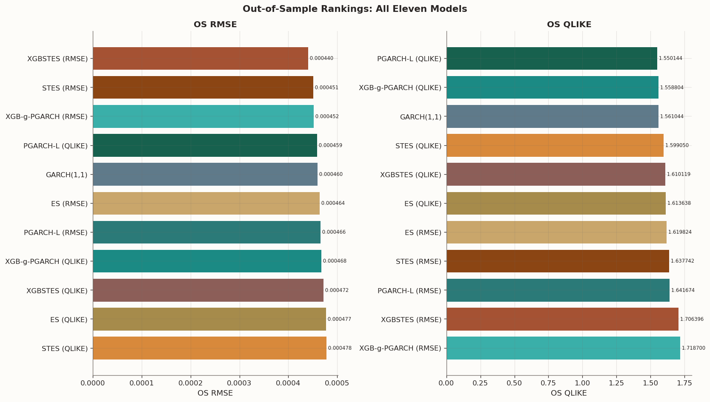

In Part 4 we ran a training experiment: each model family — ES, STES, and XGBSTES — was fitted under both RMSE and QLIKE, then scored on both metrics out of sample. The most striking result was that the GARCH(1,1) model consistently ranked first in out-of-sample QLIKE while placing a competitive third in RMSE — despite using no predictor features at all.
At first glance this is puzzling. STES and XGBSTES are more flexible: they allow the smoothing weight to vary with predictors and, in the case of XGBSTES, through a nonlinear boosted mapping. One would expect this flexibility to help, or at least not hurt, once all models are trained on the same objective. Yet GARCH consistently won under QLIKE.
One explanation lies in what GARCH separates and what STES-type models entangle. A standard GARCH(1,1) recursion,
h_t = \omega + \alpha y_{t-1} + \beta h_{t-1}
can be rewritten by defining \phi = \alpha + \beta, g = \alpha/(\alpha+\beta), and \mu = \omega/(1-\alpha-\beta) as
This decomposition contains three distinct structures:
\mu: the long-run variance anchor — the level the forecast reverts to,
\phi: the total persistence — how much weight goes to recent information versus the anchor,
g: the innovation share — within the persistent component, how much weight goes to yesterday’s shock versus yesterday’s state.
A STES-style recursion h_t = g_t y_{t-1} + (1-g_t) h_{t-1} varies only the innovation share. It does not separately estimate a long-run anchor or a total persistence parameter. A single gate must simultaneously decide how much to react to the latest shock, how much memory to retain, and what level the recursion drifts toward. That is too much to ask from one scalar mechanism — especially under QLIKE.
QLIKE penalizes proportionally: driving h_t too low is punished much more heavily than overshooting by the same absolute amount. This makes the loss especially sensitive to getting the variance scale and persistence structure right. GARCH’s intercept \omega, equivalently the anchor \mu, prevents the forecast from collapsing toward zero — exactly the failure mode that QLIKE punishes most. STES has no such safeguard.
This motivates a new model family: Predictive GARCH (PGARCH). The idea is to keep the GARCH-like structural decomposition that appears essential for QLIKE performance, but let the structural components be predictor-driven and time-varying. Instead of predicting (\omega_t, \alpha_t, \beta_t) directly, we parameterize through the interpretable triple (\mu_t, \phi_t, g_t) and define
PGARCH-L (Linear PGARCH): all three channels are linear functions of predictors, trained end-to-end by L-BFGS-B with analytic recursive gradients.
XGB-g-PGARCH: \mu and \phi come from a fitted PGARCH-L initializer; the innovation-share channel g is then refined by a gradient-boosted tree with a custom adjoint-based objective.
The rest of this post defines the model family, derives the key equations, and benchmarks both variants against the seven models from Part 4 on the same SPY sample and fixed split.
2 The PGARCH Model
2.1 Recursion
Let y_t \ge 0 denote a nonnegative volatility target (we use y_t = r_t^2). PGARCH defines the variance forecast by
with constraints \mu_t > 0, \phi_t \in (0,1), g_t \in (0,1), and a fixed initial state h_0 \ge 0.
The quantity q_t is a convex combination of yesterday’s shock y_{t-1} and yesterday’s state h_{t-1}. The full forecast h_t is then a convex combination of the long-run anchor \mu_t and q_t, weighted by persistence \phi_t.
a time-varying GARCH(1,1) with \alpha_t + \beta_t = \phi_t < 1 enforced by construction.
2.3 Special cases
Restriction
Model recovered
\mu_t = \mu, \phi_t = \phi, g_t = g constant
Constrained GARCH(1,1)
\phi_t \equiv 1, anchor dropped
STES exponential smoothing
(\mu_t, \phi_t, g_t) are linear functions of predictors
PGARCH-L (this post)
g_t boosted by XGBoost, \mu_t and \phi_t from PGARCH-L
XGB-g-PGARCH (this post)
The nesting structure is the key insight: PGARCH does not abandon GARCH’s recursion. It generalizes the parameter mapping while preserving the structural decomposition that QLIKE rewards.
3 Linear PGARCH (PGARCH-L)
In PGARCH-L, each structural parameter is a linear function of predictors passed through a link that enforces its constraint. Let \tilde{x}_{t-1} = [1, x_{t-1}] denote the augmented feature vector available at time t-1. Three linear scores
The softplus link guarantees \mu_t > \mu_{\min} > 0; the sigmoid links map \phi_t and g_t into (0,1).
3.1 Estimation
The full parameter vector \theta = [w_\mu, w_\phi, w_g] is trained end-to-end by minimizing MSE or QLIKE over the recursive variance path. The gradient is computed analytically via a forward recursion that propagates Jacobians J_t = \partial h_t / \partial \theta through the PGARCH state equations. We also derive the corresponding Hessian recursion H_t = \partial^2 h_t / \partial \theta \partial \theta^\top for verification and analysis, but the implemented optimizer uses L-BFGS-B with analytic gradients rather than a supplied exact Hessian.
Because the recursion is sequential, h_0 is treated as a fixed causal warm start (set to \max(y_0, h_{\min})), and the loss is computed only over t = 1, \ldots, T-1. Full derivative formulas appear in the Appendix.
4 XGB-g-PGARCH
A full nonlinear PGARCH could let all three channels be learned by flexible models. The first extension is to boost only the innovation-share channelg_t, while keeping \mu_t and \phi_t fixed from a PGARCH-L initializer. This targets exactly the mechanism analogous to the STES gate within the GARCH structure.
4.1 Model structure
Given baseline sequences \mu_t and \phi_t from a fitted PGARCH-L, define
where c_t^{(0)} is the baseline raw score and F_g is a gradient-boosted tree ensemble. The recursion remains h_{t+1} = (1-\phi_t)\mu_t + \phi_t(g_t y_t + (1-g_t)h_t).
4.2 Custom XGBoost objective
Under this indexing, row t produces a raw score that affects the next-step forecast h_{t+1}. The exact row-wise gradient is computed via a backward adjoint recursion like we did in Part 3: define \lambda_t = \partial L / \partial h_t (total derivative including all downstream effects), then
where u_t = \partial \ell_t / \partial h_t is the per-step loss derivative and \rho_t = \phi_t(1-g_t) is the state propagation coefficient. The row-wise gradient is then
where C_s = (g_{\max} - g_{\min})\sigma(c_s)(1-\sigma(c_s)) is the link derivative.
For the per-row Hessian diagonal, we use a positive curvature surrogate rather than the exact (possibly indefinite) second derivative. Under MSE this is a Gauss-Newton approximation; under QLIKE we use Fisher-style scaling w_t = 1/(Nh_t^2), which is the expected information and avoids amplification from extreme observations. The terminal row (s = T-1) receives zero gradient and Hessian since it has no in-sample next-step forecast.
Fit Part 4 baselines locally: GARCH(1,1) + ES/STES/XGBSTES under RMSE and QLIKE
actual_is = y_tr.valuesactual_os = y_te.valuesmodel_predictions = {"GARCH(1,1)": {"loss": "MLE", "is": garch_pred_is, "os": garch_pred_os},"ES (RMSE)": {"loss": "RMSE", "is": es_pred_is, "os": es_pred_os},"ES (QLIKE)": {"loss": "QLIKE", "is": es_qlike_pred_is, "os": es_qlike_pred_os},"STES (RMSE)": {"loss": "RMSE", "is": stes_pred_is, "os": stes_pred_os},"STES (QLIKE)": {"loss": "QLIKE", "is": stes_qlike_pred_is, "os": stes_qlike_pred_os},"XGBSTES (RMSE)": {"loss": "RMSE", "is": xgbstes_pred_is, "os": xgbstes_pred_os},"XGBSTES (QLIKE)": {"loss": "QLIKE", "is": xgb_qlike_pred_is, "os": xgb_qlike_pred_os},"PGARCH-L (RMSE)": {"loss": "RMSE", "is": pgarch_l_rmse_is, "os": pgarch_l_rmse_os},"PGARCH-L (QLIKE)": {"loss": "QLIKE", "is": pgarch_l_qlike_is, "os": pgarch_l_qlike_os},"XGB-g-PGARCH (RMSE)": {"loss": "RMSE", "is": xgb_pgarch_rmse_is, "os": xgb_pgarch_rmse_os},"XGB-g-PGARCH (QLIKE)": {"loss": "QLIKE", "is": xgb_pgarch_qlike_is, "os": xgb_pgarch_qlike_os},}comparison_table = pd.DataFrame({"Model": list(model_predictions.keys()),"Train Loss": [v["loss"] for v in model_predictions.values()],"IS RMSE": [rmse(actual_is, v["is"]) for v in model_predictions.values()],"OS RMSE": [rmse(actual_os, v["os"]) for v in model_predictions.values()],"OS MAE": [mae(actual_os, v["os"]) for v in model_predictions.values()],"OS QLIKE": [qlike(actual_os, v["os"]) for v in model_predictions.values()],})display(style_results_table(comparison_table, precision=6, index_col="Model"))
All eleven model variants: Part 4 baselines plus PGARCH-L and XGB-g-PGARCH
Train Loss
IS RMSE
OS RMSE
OS MAE
OS QLIKE
Model
GARCH(1,1)
MLE
0.000504
0.000460
0.000139
1.561044
ES (RMSE)
RMSE
0.000506
0.000464
0.000140
1.619824
ES (QLIKE)
QLIKE
0.000508
0.000477
0.000144
1.613638
STES (RMSE)
RMSE
0.000501
0.000451
0.000135
1.637742
STES (QLIKE)
QLIKE
0.000503
0.000478
0.000141
1.599050
XGBSTES (RMSE)
RMSE
0.000503
0.000440
0.000132
1.706396
XGBSTES (QLIKE)
QLIKE
0.000510
0.000472
0.000148
1.610119
PGARCH-L (RMSE)
RMSE
0.000510
0.000466
0.000151
1.641674
PGARCH-L (QLIKE)
QLIKE
0.000483
0.000459
0.000132
1.550144
XGB-g-PGARCH (RMSE)
RMSE
0.000495
0.000452
0.000134
1.718700
XGB-g-PGARCH (QLIKE)
QLIKE
0.000490
0.000468
0.000133
1.558804
Two-panel ranking chart: OS RMSE vs OS QLIKE
# Color mapping: PGARCH family gets a distinct blue-green palette_palette = {"GARCH(1,1)": "#5F7A8A","ES (RMSE)": "#C9A66B","ES (QLIKE)": "#A68B4B","STES (RMSE)": BLOG_PALETTE[0],"STES (QLIKE)": "#D8893B","XGBSTES (RMSE)": BLOG_PALETTE[1],"XGBSTES (QLIKE)": "#8C5E58","PGARCH-L (RMSE)": "#2B7A78","PGARCH-L (QLIKE)": "#17614E","XGB-g-PGARCH (RMSE)": "#3AAFA9","XGB-g-PGARCH (QLIKE)": "#1B8A84",}fig, axes = plt.subplots(1, 2, figsize=(14, 8))for ax, metric inzip(axes, ["OS RMSE", "OS QLIKE"]): chart_df = comparison_table.sort_values(metric, ascending=True).reset_index(drop=True) colors = [_palette.get(m, "#999999") for m in chart_df["Model"]] bars = ax.barh(chart_df["Model"], chart_df[metric], color=colors, edgecolor="white", linewidth=0.6) ax.set_title(metric, fontsize=12, fontweight="bold") ax.set_xlabel(metric) ax.invert_yaxis()for bar, val inzip(bars, chart_df[metric]): ax.text(val, bar.get_y() + bar.get_height() /2, f" {val:.6f}", va="center", fontsize=7)fig.suptitle("Out-of-Sample Rankings: All Eleven Models", fontsize=13, fontweight="bold")fig.tight_layout()plt.show()

5 Analysis
The benchmark table and ranking chart shows the following:
PGARCH-L (QLIKE) takes the top QLIKE spot. With an OS QLIKE of 1.550, it edges out GARCH(1,1) (1.561) — the model that dominated every STES variant in Part 4. It also ranks 4th in RMSE (0.000459), making it the first model in the series to be competitive on both metrics simultaneously. This confirms the structural hypothesis: preserving the three-channel decomposition (\mu, \phi, g) while adding predictor-driven flexibility is what it takes to match or beat GARCH under QLIKE.
XGB-g-PGARCH (RMSE) is the 3rd-best RMSE model (0.000452), behind only XGBSTES (RMSE) and STES (RMSE). The nonlinear boosting in the g-channel picks up level-sensitive signal that the linear model misses. However, the same model ranks dead last in QLIKE (1.719) — worse even than XGBSTES (RMSE). The boosted gate’s flexibility, when trained under RMSE, drives the variance forecast in directions that QLIKE punishes.
XGB-g-PGARCH (QLIKE) lands between the linear extremes. At QLIKE rank 2 (1.559) it closes most of the gap to GARCH but falls behind PGARCH-L (QLIKE). Its RMSE is somewhat worse (rank 8, 0.000468). The result suggests that boosting the g-channel under QLIKE adds noise relative to the linear baseline — the current three-feature predictor space does not contain enough nonlinear signal to justify the additional flexibility.
RMSE-trained PGARCH-L misses on QLIKE (1.642, rank 9), echoing the Part 4 finding that even the right model structure cannot overcome a misaligned training loss.
We now formalize these observations with head-to-head comparisons, Diebold-Mariano tests, and Mincer-Zarnowitz calibration regressions.
Head-to-head: RMSE-trained vs QLIKE-trained within each PGARCH family:
OS RMSE (RMSE)
OS RMSE (QLIKE)
Δ RMSE
OS QLIKE (RMSE)
OS QLIKE (QLIKE)
Δ QLIKE
Family
PGARCH-L
0.000466
0.000459
-0.000007
1.641674
1.550144
-0.091530
XGB-g-PGARCH
0.000452
0.000468
0.000016
1.718700
1.558804
-0.159896
Out-of-sample ranking under both loss functions:
OS RMSE
OS QLIKE
RMSE Rank
QLIKE Rank
Model
XGBSTES (RMSE)
0.000440
1.706396
1
10
STES (RMSE)
0.000451
1.637742
2
8
XGB-g-PGARCH (RMSE)
0.000452
1.718700
3
11
PGARCH-L (QLIKE)
0.000459
1.550144
4
1
GARCH(1,1)
0.000460
1.561044
5
3
ES (RMSE)
0.000464
1.619824
6
7
PGARCH-L (RMSE)
0.000466
1.641674
7
9
XGB-g-PGARCH (QLIKE)
0.000468
1.558804
8
2
XGBSTES (QLIKE)
0.000472
1.610119
9
5
ES (QLIKE)
0.000477
1.613638
10
6
STES (QLIKE)
0.000478
1.599050
11
4
Head-to-head: RMSE-trained vs QLIKE-trained within each PGARCH family, and cross-family comparisons
6 Formal Comparison and Calibration
Point metrics and rankings are informative, but we need to test whether the differences are statistically meaningful. As in Part 4, we use two complementary diagnostics (background):
Diebold-Mariano tests on squared-error and QLIKE loss differentials. A negative DM statistic favors the first-named model.
Mincer-Zarnowitz regressions on the variance scale. A slope \beta \approx 1 indicates well-calibrated forecasts.
The key pairwise comparisons are: PGARCH-L vs GARCH (does the linear structural model match the benchmark?), XGB-g-PGARCH vs GARCH (does boosting improve on it?), XGB-g-PGARCH vs XGBSTES (does the PGARCH model family beat the STES model family?), and XGB-g-PGARCH vs PGARCH-L (does nonlinear flexibility in g_t help or hurt?).
Diebold-Mariano tests and Mincer-Zarnowitz regressions
The DM tests organize the eleven models into four stories.
PGARCH-L (QLIKE) vs GARCH — statistically indistinguishable. Under QLIKE loss, DM = −0.42 (p = 0.67); under squared error, DM = −0.07 (p = 0.94). The point estimates favor PGARCH-L on both metrics, but the improvement is too small to reject equal predictive ability. This is still a meaningful result though: PGARCH-L matches GARCH under QLIKE — something no STES variant accomplished in Part 4. When trained under RMSE instead, PGARCH-L significantly underperforms GARCH on QLIKE (DM = 4.77, p < 0.001), confirming that the training loss must align with the evaluation criterion.
XGB-g-PGARCH (QLIKE) vs GARCH — also indistinguishable. DM = −0.09 (p = 0.93) under QLIKE. The boosted model matches GARCH but does not improve on it. However, XGB-g-PGARCH (RMSE) tells a different story: despite ranking 3rd in RMSE, it significantly underperforms GARCH on QLIKE (DM = 3.21, p = 0.001). The boosted g-channel, when optimized for squared error, overshoots on the episodes that QLIKE penalizes most.
XGB-g-PGARCH vs PGARCH-L — boosting hurts under QLIKE. XGB-g-PGARCH (QLIKE) vs PGARCH-L (QLIKE) yields DM = 2.13 (p = 0.033) under QLIKE loss — the linear model significantly outperforms the boosted model. Under squared error, DM = 1.49 (p = 0.14) also favors PGARCH-L directionally. With only three return-based features, the nonlinear flexibility in the boosted g-channel does not find useful signal; it adds estimation noise that degrades QLIKE performance. This result underscores that model complexity must be justified by feature richness.
PGARCH vs STES/XGBSTES. XGB-g-PGARCH (RMSE) vs XGBSTES (RMSE): DM = 0.82 (p = 0.41) under QLIKE. XGBSTES still has the lower mean QLIKE on this split, but once the RMSE baselines are refit locally the difference is no longer statistically significant. XGB-g-PGARCH (QLIKE) vs XGBSTES (QLIKE): DM = −1.29 (p = 0.20) — the PGARCH model family shows a directional QLIKE advantage but not significant.
MZ calibration reveals a trade-off between QLIKE score and proportional calibration. GARCH (β = 1.02) and PGARCH-L (RMSE) (β = 1.03) are the best-calibrated models. PGARCH-L (QLIKE) overshoots to β = 1.28, while XGB-g-PGARCH (QLIKE) sits at β = 1.15 — better calibrated than PGARCH-L (QLIKE) but with a worse QLIKE score. The boosted model’s additional flexibility pulls calibration back toward one at the cost of QLIKE optimality. XGBSTES (RMSE) retains the highest R² (0.33), while the PGARCH family ranges from 0.24 to 0.29.
7 Structural Parameter Dynamics
One advantage of the PGARCH decomposition over STES is interpretability. Because PGARCH exposes \mu_t, \phi_t, and g_t as separate time-varying quantities, we can inspect how each structural role evolves over the out-of-sample period. STES provides only a single gate \alpha_t, which conflates all three roles.
The figure below plots the three channels from PGARCH-L (QLIKE) over the test period. We expect \mu_t to track long-run variance regimes, \phi_t to remain high (reflecting the well-known persistence of equity volatility), and g_t to spike after large shocks — the same reaction pattern that STES captures, but now isolated from the persistence and level channels.
Time-varying structural parameters: μ_t, φ_t, g_t over the test period
Across all eleven model variants, the ranking table reveals a clear separation by training objective. Under RMSE, the top three are XGBSTES (RMSE), STES (RMSE), and XGB-g-PGARCH (RMSE). Under QLIKE, the top three are PGARCH-L (QLIKE), XGB-g-PGARCH (QLIKE), and GARCH(1,1).
PGARCH-L (QLIKE) is the first model in the series to rank in the top four under both criteria (rank 4 in RMSE, rank 1 in QLIKE). In Part 4, GARCH was the sole dual-metric performer. This is achieved by combining the GARCH structure that QLIKE rewards with predictor-driven flexibility that keeps RMSE competitive.
The boosted XGB-g-PGARCH variant shows a different pattern: strong in RMSE when RMSE-trained (rank 3), strong in QLIKE when QLIKE-trained (rank 2), but with sharper trade-offs between the two metrics. On this feature set, the linear PGARCH-L is the more robust choice.
9 Conclusion
In this post we introduced PGARCH — a model family that generalizes GARCH(1,1) by making its structural parameters dependent on exogenous variables — and benchmarked two members against the seven models from Part 4. Three findings stand out.
The structural decomposition reduces QLIKE loss. PGARCH-L (QLIKE) achieves the best out-of-sample QLIKE score (1.550) across all eleven model variants, edging out GARCH(1,1) (1.561) while remaining competitive in RMSE (rank 4). No STES variant accomplished this in Part 4. The three-channel decomposition — separate \mu, \phi, g — is the structural feature that QLIKE rewards, and PGARCH preserves it while adding predictor-driven flexibility. Formally, the DM test shows the improvement over GARCH is directional but not statistically significant (p = 0.67), placing PGARCH-L on equal footing with GARCH rather than clearly surpassing it.
Boosting the g-channel alone creates on three features creates noisy results. XGB-g-PGARCH shows that nonlinear flexibility in the innovation-share channel can help (RMSE rank 3 under RMSE training) or hurt (significantly worse than PGARCH-L under QLIKE, DM = 2.13, p = 0.033). With only three return-based features, the boosted gate does not find enough nonlinear signal to justify its additional complexity under QLIKE — it adds estimation noise.
Training loss still dominates model structure. PGARCH-L (RMSE) scores 1.642 under QLIKE and is significantly worse than GARCH (DM = 4.77, p < 0.001). XGB-g-PGARCH (RMSE) is even worse at 1.719, last among all eleven models. The same structural decomposition that leads the QLIKE rankings under QLIKE training falls to ranks 9 and 11 under RMSE training.
9.1 What’s next
The finding that boosting hurts on a sparse feature set points directly to the next step: the feature set may be the binding constraint. In the next post we will explore the following directions:
Feature expansion — adding trailing realized-variance windows, calendar indicators, and economic variables to the predictor set. With a richer feature space, the nonlinear capacity of XGB-g-PGARCH should become an advantage rather than a liability.
Multi-channel boosting — extending the XGBoost objective to jointly learn \mu_t and g_t (or all three channels), allowing the long-run anchor to respond to macroeconomic regimes.
Rolling evaluation — replacing the fixed split with expanding-window or rolling-origin evaluation to produce time-indexed DM statistics and assess forecast stability across market regimes.
10 Appendix: PGARCH Derivative Details
This appendix collects the full derivative formulas used to train the models in this post.
10.1 Loss functions
We consider two training losses over the effective sample t = 1, \ldots, T-1 (excluding the warm-start h_0), with N = T-1:
Let \theta = [w_\mu, w_\phi, w_g] and \tilde{x}_{t-1} = [1, x_{t-1}]. Define block-embedded vectors d_t^\mu, d_t^\phi, d_t^g that place \tilde{x}_{t-1} in the appropriate block of \theta and zeros elsewhere.